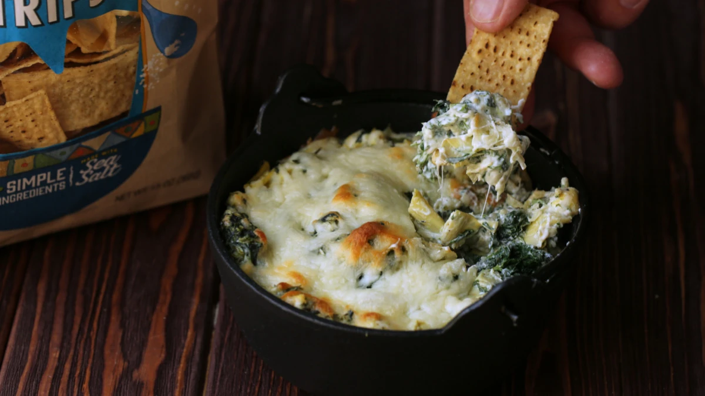

Stinging Nettle and Artichoke Dip

Ingredients
- 1 cup stinging nettles, blanched, wrung, and chopped
- 1 (14oz) can artichoke hearts, drained and chopped
- 3/4 cup mayonnaise
- 8 oz. cream cheese, softened
- 1/4 cup grated Parmesan cheese
- 1/4 cup grated Romano cheese
- 1/4 tsp. garlic powder
- 1/8 tsp. ground nutmeg
- 1/2 tsp. seasoned salt, plus extra
- Freshly cracked pepper, to taste
- 1/2 cup grated Mozzarella cheese
- Tortilla chips
Instructions
-
To prepare fresh stinging nettles, bring a pot of water to a boil. Using tongs to
handle the nettles, blanch young leaves and stems until wilted - about 30 seconds.
Transfer to a bowl of
ice water to stop cooking. Then drain and squeeze out as
much water as possible. Roughly chop wrung nettles.
-
Preheat oven to 350 degrees. In a mixing bowl, combine all ingredients except
Mozzarella cheese. Season to taste. Spray an oven-prooof ramekin or dip bowl and
transfer cold dip
into it. Sprinkle Mozzarella cheese on top and bake in a 350
degree oven for 30 minutes, or until heated through and top becomes toasty.
-
Serve hot with tortilla chips. You can also prepare this dip and keep warm in a
mini slow cooker.
Click here for this recipe and accompanying article.